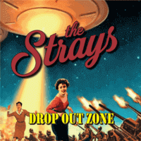

the Strays - Drop Out Zone (Album, 2019)
01 - Hey Little Lady (4:20)
02 - Fives And Twos (2:26)
03 - Night Time Is The Right Time (3:13)
04 - Oh Baby No! (5:33)
05 - Get Out Of This Town (3:18)
06 - Drop Out Zone (3:57)
07 - Can't Get Through To You (3:01)
08 - Fire And Ice (3:56)
09 - Twelve Bar Booze (4:05)
10 - Break Me Down (3:39)
11 - This Life (4:07)
12 - Just Another Day (4:38)
13 - Oh Baby No (radio edit) (3:47)
© Western Star Records :: [-]
Notes
Review
322/366 (Project 366)
Modern alternative Rock'n'Roll with shades of punky Rockabilly, touches of Garage Rock drive and poppy mood of vintage.
Songs with female vocals always sound very charming, astoundingly encouraging and special. And if these are alternative genres, then in addition they sound unusual! The Strays has a movin' and groovin' approach, perky tone and loud fun. Mostly because of the cocktail of styles and genres that can be considered influencing the band's sound. Well, for example - Rock and Roll, Punk style, Rockabilly music and its different forms, be it Garage, Pop or Undeground. Probably the best term would be Modern alternative Rockabilly with a sensuously pushy Punk'N'Roll. But it doesn't matter, though. Because it's just resonant modern music with a somewhat vintage outburst of crazy nostalgia. Fashionable voice, keen rockin' and rollin', a lot of cheerfulness and encouragement, changing tempos and moods of singing, which comes out in a very melodic bouncing style. So, restless song arrangements, very voluptuous and enticing vocals, charmingly combined with a rather rough and harsh sound. This is perhaps the peculiarity. Yes, this is a somewhat violent, rebellious, partying sound with furious energy of garage rock and roll way, but everything is in sparkles.. The female vocalist, of course, attracts the main attention - but there are also great guitars solos, and drums with bass are stunning actually.
Honestly, with its uniqueness and might, I almost immediately had to remember UK legends - Girlschool (albeit very conditional, and more precisely speaking, their vibe of 1980s tracks like "Yeah Right" and "C'mon Let's Go"). There is something motoric and heavy, in a way motor-a-billy with much more 'sleek' grooves and atmosphere, but punky feminine.
The Strays first EPs are nice too, where the stomping mood was much more with swampy tone and some sorts of real modern way of rockabilly. The second EP also with a bit more strict garage rockin' roll and just general modern way of doing fine, lively, energetic and cutting music. So daring rockabilly. While the album focuses more on vocals and other effects, and the female voice sounds more charming on the album. In fact, it is all about the dance. Wild, fun, rough and courage one. The raging emotions of dance bring rousing sensations.
A little about the songs. "Hey Little Lady" with a somewhat plump sound of drums and even sonorous enough, but the main point is a graceful woman. Rock and Roll, throwing tune but a bit baggy though. Anyhow, I like how heavy this song is sounded. Pushy and punchy, and so straight and melodious thanks to vocals, overdubs and blaring guitars. It is a really long track for such a driving song, but there are some trendy riffs, solos and restless beats. "Fives And Twos" is so groovy and so punky. I really adore a tune with such a crazy mood and rocking tone. And also this bouncing singing! Marvelous. Raw and perfect tune. And besides, what a chic "na na na" at the end. Laying out all the coolness in one stormy rush. The third track "Night Time Is The Right Time" with a vibrant start, then sparkling, with a further switch to gloss, and then to a blend of all. Maybe overproduced, but good anyway. "Oh Baby No!" - funky start, and then such a groove and strolling poetry with a memorable chorus. Smooth accompaniment backton - that is fancy. Juicy backing vocals, moaning guitar solo. Great. The radio edit version with less 'frills' and maybe good. "Get Out Of This Town" is a cool danceable rockin' and rollin' modern rockabilly. As with other songs - topnotch solos. "Drop Out Zone" is a punky funky theme with garage roll vibe and power poppin' rock. So catchy singing, lyrics to chant along with and the melody that is pushing around. Peculiarity of the band. "Can't Get Through To You" is a mysterious cover song. Uhm... crazy and mad! hypnotic and tough! Highly emotional. "Fire And Ice" is a blast track. In one unique song, all the perks and characteristics of the group were combined. And it is not done in a wild rave, but edible! With fuzzing a bit. "Twelve Bar Booze" is a fine tune to make a booze sound through a somewhat hillbilly/countrified base with such bouncy and peppy alternative rockin' roll. Boozers and rowdies. Loud and fun. "Break Be Down" is a wonder tune with some really wow pieces of real hardcore for this kind of music. "This Life" is maybe somewhat (neo)of(neo)Rockabilly Rock. Scratchin' start and then poppy out stunning tune. Also this magic female voice, vocals and manner of singing. Mightily done. But the most chic is the use of alternative streams for doing a musical wave. "Just Another Day" is maybe so Strays Rock'n'Roll. Despite the fact that it is really painted with some kind of effects, additions or just general cool arrangements with guitar solos, cool drums and so on - but as if they were just forced to make a track longer than four minutes and they did not know what to fill. Why could not it have been easier. Yes, it turned out great - beautiful piece and so on - but what is it for! What does it reflect? Of course, it is perceived as a rather solid and mature thing. And maybe thanks to just this approach. So, maybe that's the way.